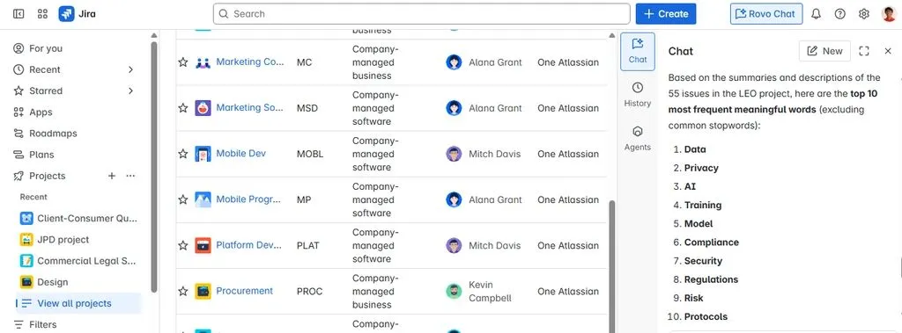

How I use Rovo across Slack, Jira, and Confluence
Originally posted on LinkedIn, June 23, 2026.
Rovo from Jira and Atlassian is a gold mine, and not enough people are using it.
First, it connects to Slack. Whenever I need to find a conversation or see who discussed a specific topic, I ask Rovo. When I include the word Slack, it knows to search there. I can also point it to specific channels, as long as they are public. It cannot access private channels. This is finally an AI tool that can actually search inside the company Slack.
Second, its Jira ticket search works extremely well. If I need a ticket that was closed in the previous sprint but cannot remember its exact title, I describe what I remember in plain language or mention who worked on it. Rovo finds the right ticket every time.
Third, it can create Confluence documents. Say there was a production incident, with a long Slack conversation involving different people from the initial report through the fix update. Now someone needs to write the postmortem. A simple request to Rovo can organize who said what and when, what people proposed, what the team discovered, and even create a document with the finished content.
In another case, someone started refactoring a specific area of the system. I asked Rovo to collect every task and bug we had in that area and create a document. The result was gold. The developer got up to speed immediately and identified possible failures that I doubt he could have known about otherwise. The quality of a refactor changes when the developer already knows everything the team has been through in that part of the system.
Creating Confluence documents is still a little clunky, and every change requires creating a new document. Atlassian being Atlassian, UX is not their strength. But Rovo provides enormous value, and I have started making it part of my day-to-day work.
